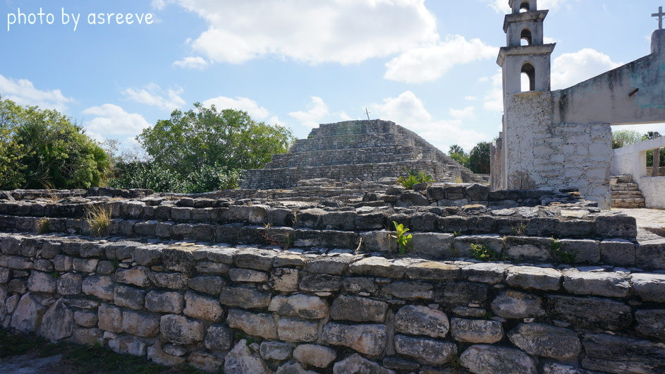
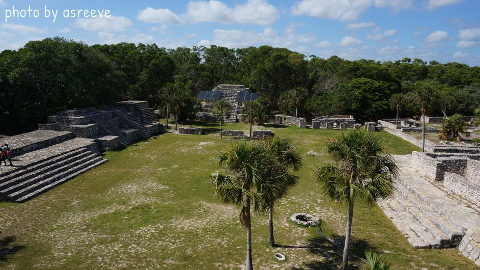
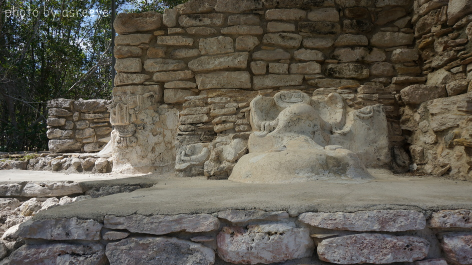
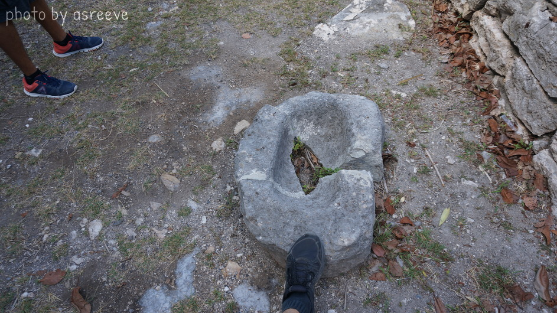
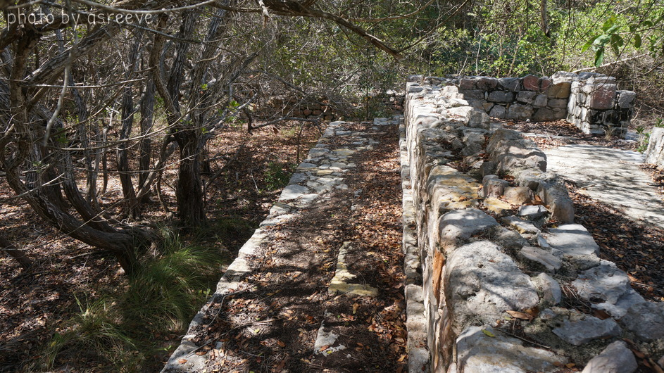
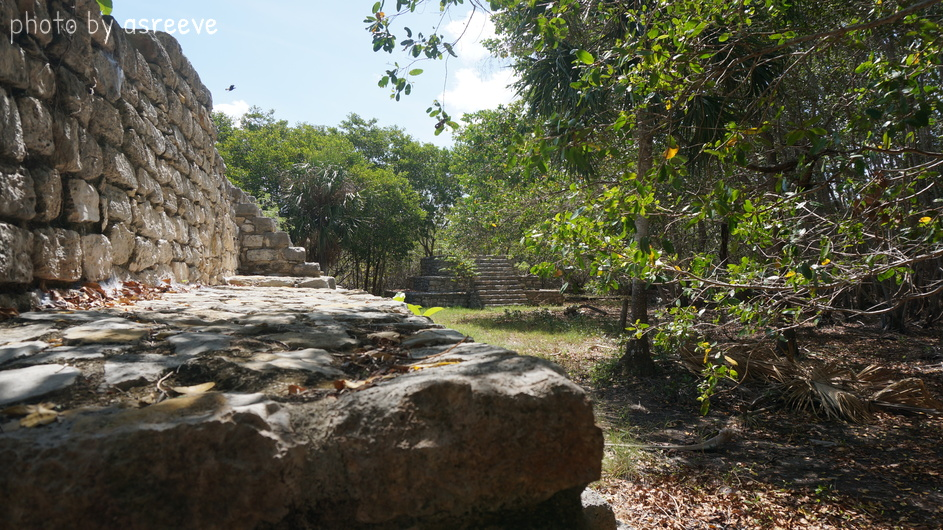
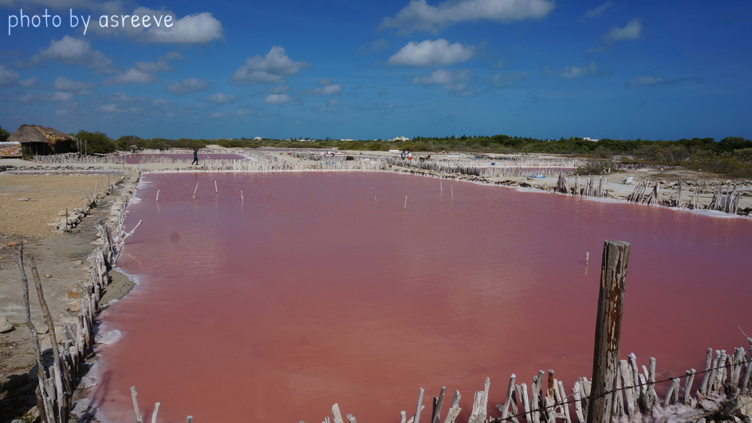
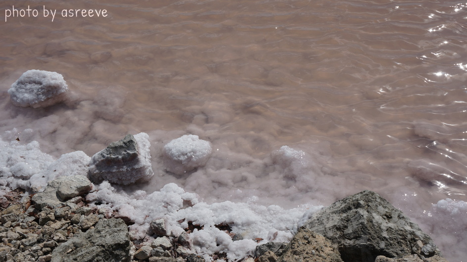

Trip to Xcambo (13.Apr.2022)
Xcambo Mayan ruins and las Salineras
Xcambo is a Mayan archeological site on the north coast of the Yucatan Peninsula. Information on this site can be found at this site on Mayan Ruins. This site is located in the dry and hot coast of the Yucaten, were seawater is evaporated in lagoons and salineras to produce sea salt. Yucatan sea salt was traded for other goods by the Mayans and is exported today.
Pictures from Xcambo are below:







